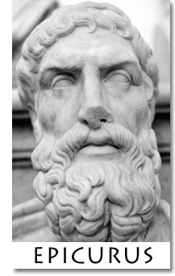
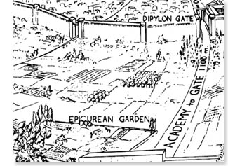
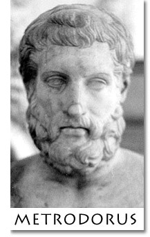
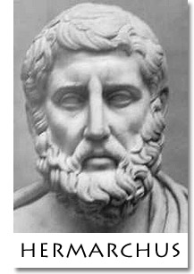
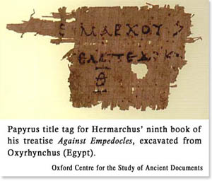

|
|
Introduction |
|
|
001
002
|
EPICURUS,
son of Neocles and Chaerestrate, was an Athenian from the district of Gargettus
district, of
the Philaidae clan, as Metrodorus reports in his book On Noble Birth.
Other sources, including Heraclides in his Epitome of Sotion, report that
he grew up in Samos, after the Athenians divided up the land for colonization,
and he came to Athens at age eighteen, when Xenocrates lectured at the Academy,
and Aristotle in Chalcis. But when Alexander of Macedon died, and the
Athenians at Samos were evicted by Perdiccas, Epicurus left Athens to join
his father in Colophon. He stayed there for some time and gathered disciples, then
returned to Athens during the archonship of Anaxicrates {307-306 BCE}. For
a while, he continued practicing philosophy with other philosophers, but
afterwards he eventually founded the philosophical sect which bears his name.
He first encountered philosophy, as he himself says, at the age of fourteen. Apollodorus the Epicurean, in the first book of his Life of Epicurus,
reports that he turned to philosophy out of disgust with his schoolmasters,
because they could not explain to him the meaning of chaos in Hesiod.
|
|
|
003 |
Hermippus, however, asserts that he began his career as a schoolmaster, and was
then turned on to Philosophy by the works of Democritus. Hence, Timon
says:
The last of all the philosophers of physics,
And the most shameless too, did come from Samos,
A
schoolmaster like his father before him,
Himself the most uneducated of mortals.
|
|
|
|
At his exhortation, his three
brothers, Neocles, Chaeredemus, and Aristobulus, joined his sect, as Philodemus, the Epicurean, reports in
his tenth book On Philosophers. He had also a slave, whose
name was Mys, as Myronianus reports in his Historical Parallels.
Dubious and Slanderous
Accounts
|
|
|
004
005 |
Diotimus the Stoic was very hostile to him; he slandered
him egregiously, publishing fifty obscene letters, which he attributed to
Epicurus. Yet another author ascribed letters to Epicurus that were commonly attributed to
Chrysippus. Posidonius the Stoic, Nicolaus, and Sotion, in the twelfth book
of his 24-volume Refutations of Diocles, and Dionysius of Halicarnassus
also slandered him. They alleged that:
-
he used to go round
cottages with his mother fortune-telling and reading rites of purification.
-
he assisted at his father’s school for a pittance.
-
one of his brothers was a pimp and lived with
Leontium the courtesan.
-
he claimed the doctrines of Democritus, about atoms,
and of Aristippus, about pleasure, were his own.
-
he was not a genuine Athenian citizen (a charge
brought by Timocrates and by Herodotus in a book On the Training of
Epicurus as a Cadet).
-
he shamelessly flattered Mithras, the minister of
Lysimachus, bestowing upon him, in his letters, Apollo’s titles of Paean
{Healer} and Lord.
-
he flattered Idomeneus, Herordotus, and Timocrates,
for publishing his esoteric doctrines.
-
and that in his letters, he wrote...
-
to Leontium: “Oh
Lord Paean,
my dear
little Leontium, to what tumultuous applause we were inspired as we read
your letter.”
-
to
Themista, the wife of Leonteus:
“I am
quite ready, if you do not come to see me, to spin thrice on my own axis
and be propelled to any place that you, including Themista, agree upon.”
-
to the
beautiful Pythocles:
“I
shall sit down and await your lovely and godlike appearance.”
|
|
|
006 |
Also, Theodorus says in the fourth book Against Epicurus,
that:
-
in another letter to
Themista he had determined to make his way with her.
-
he also wrote to many other courtesans, especially to Leontium,
with whom Metrodorus also was in love.
-
in his book On the End-Goal, he writes, “I
do not know how to conceive the good, apart form the pleasures of taste, the
pleasures of sex, the pleasures of sound and the pleasures of contemplating
beauty.”
-
and that in his letter to Pythocles, he writes,
“Hoist all sail, my dear boy, and steer clear of all culture.”
|
|
|
007
008 |
Epictetus calls him a preacher of unmanliness and showers
abuse on him.
Even Timocrates, the brother of Metrodorus, who was his
disciple until he left the school, asserts in his book entitled Merriment,
that:
-
Epicurus vomited twice a
day from overindulgence
-
he himself had great
difficulty escaping this secret society with its night-long sessions.
-
Epicurus was rather ignorant
of philosophy, and his ignorance of real life was even greater.
-
his bodily health was pitiful, and for
that many years he
was unable to rise from his chair.
-
he spent a whole mina daily on his
table, and that he
himself says so in his letter to Leontium and in the one to the philosophers
of Mitylene.
-
among other courtesans who consorted with him and
Metrodorus were Mammarion, Hedia, Erotion, and Nikidion {“Mama,”
“Lusty,”
“Erotique,”
and “Victory.”}
-
in his 37 books On Nature,
he is overly repetitive and argumentative
-
he argued especially against
Nausiphanes, saying
“They
can go to Hades; when working
slavishly
with an idea, he too bragged like a Sophist.”
-
even in his letters,
Epicurus himself writes of Nausiphanes:
“So incensed,
he cursed me and called me schoolmaster.”
-
and that Epicurus disparaged many
philosophers:
-
Nausiphanes he
called a
pleumonon. {= “jellyfish,” imputing
insensibility}
-
Plato’s school he called the
“flatterers
of Dionysius.”
-
Plato himself: “Golden.”
-
Aristotle: a reckless spender, who,
after devouring his patrimony, took to soldiering and selling drugs.
-
Protragoras: a
“basket-carrier”
{phormophóron} and
“the scribe of Democritus” and a
“village schoolmaster.”
-
Heraclitus: a “muddler.”
-
Democritus: “Lerocritus” {the gossip-monger}
-
Antidorus: “Sannidorus” {a fawning
gift-bearer}
-
the Cynics:
“enemies
of Greece”
-
the
Dialecticians: “despoilers”
-
Pyrrho:
“ignorant” and a “bore.”
His Genuine Character
|
|
|
009
010 |
But all these people are devoid of sense. The
preponderance
of witnesses speak of the insuperable kindness of our philosopher to everyone,
whether it be to his own country who honored him with bronze statues, his
friends who are so numerous that they could not be counted in whole cities, or
all his acquaintances who were bound to him simply by the appeal of his
doctrines. None deserted him, except Metrodorus, the son of Stratoniceus, who went over to Carneades,
probably because he could not stand Epicurus’ unapproachable excellence. The
school itself, while every other school has declined, has continued in
perpetuity through an uninterrupted succession of head-philosophers. We may also
note his gratitude towards his parents, his generosity to his brothers, and his
kindness to his servants (as made plain by his will, and also from the fact that
they joined him in his philosophical pursuits, the most eminent of them being
the aforementioned Mys), and his universal philanthropy towards all men.
|
|
|
011 |
His
piety towards the gods and his love for his country are beyond words. His
deference to others was so keen that he did not bother to enter public life.
And although he lived while very difficult times oppressed Greece, he still
remained in his own country, only venturing two or three times out to Ionia to
visit his friends, who used to throng to him from all quarters to live with
him in his garden, as we are told by Apollodorus (This
garden he bought for eighty minae). And Diocles, in his third Epitome,
says that they all lived in the most simple and economical manner; “They were
content,” he says, “with a small cup of light wine, or just drank only
water.” He also tells us that Epicurus forbade his companions from holding
property in common, unlike Pythagoras, who required it. Such a
practice, in his opinion, implied mistrust – and without trust there is no
friendship. And in his letters, he himself says that he is content with
water and plain bread, adding, “Send me some Cytherean cheese, so that if I wish
to have a feast, I may have the means.”
|
|
|
012 |
Such was the real character of the man who laid down the
doctrine that pleasure was the chief good. Athenaeus eulogizes him so:
Oh men, you labor for small things;
And out of greed, you engage in strife and wars.
Yet, nature’s wealth puts a narrow limit on desires,
While vain opinions are insatiable.
This is what the wise son of Neocles heard from the Muses,
Or at the sacred shrine of Delphi’s God.
And as we proceed, we shall understand this even better from
his doctrines and his maxims.
|
|
|
|
Among the earliest philosophers, Diocles reports that his
favorites were Anaxagoras (though he disagreed with him on some points) and Archelaus, the
teacher of Socrates. Diocles adds that he used to train his pupils to commit his
writings to memory.
|
|
|
013 |
Apollodorus, in his Chronology, asserts that he was a pupil of Nausiphanes
and Praxiphanes; but in his
letter to Euridicus, Epicurus himself denies this, saying that he was
self-taught. He and Hermarchus deny that Leucippus deserved to be called a
philosopher; though some authors, including Apollodorus the Epicurean, name him
as the teacher of Democritus. Demetrius the Magnesian, says that Epicurus was
a pupil of Xenocrates also.
|
|
|
014 |
He uses plain language in his works throughout, which is unusual, and
Aristophanes, the grammarian, reproaches him for it. He was so intent on
clarity that even in his treatise On Rhetoric,
he didn’t bother demanding anything else but clarity. And in his
correspondence he replaces the usual greeting, “I wish you joy,” by wishes for
welfare and right living, “May you do well,” and “Live well.”
Ariston says in his Life of Epicurus that he derived
his work entitled The Canon from the Tripod of Nausiphanes, adding
that Epicurus had been a pupil of his, as well of the Platonist Pamphilus in Samos. Further, that he began to study philosophy at twelve
years of age, and that he founded his own school at thirty-two.
|
|
|
015
016 |
Apollodorus’ Chronology further
reports that:
-
He was born i\n the third year of the 109th Olympiad {341
BCE}, in the archonship of Sosigenes, on the seventh day of the month Gamelion,
seven years after the death of Plato {347 BCE}.
-
At thirty-two, he first set up
his school at Mitylene, and after that at Lampsacus.
-
After spending five
years in those two cities, he came to Athens.
-
He ultimately died there at seventy-two –
in the second
year of the 127th Olympiad {271-270 BCE}, in the archonship of Pytharatus.
-
Hermarchus, the son of
Agemarchus and a citizen of Mitylene, succeeded him in his school.
He died, Hermarchus writes in his letters,
from a kidney stone {or prostate cancer}, after being ill for a fortnight. Hermippus relates that
he entered a bronze bath tempered with warm water, asked
for a cup of undiluted wine, and drank it. He then bade his friends
to remember his doctrines, and expired. Our epigram for him is expressed
like so:
“Farewell, and remember all my
teachings,”
This, Epicurus told his friends upon dying.
In a warm bath, he gulped down pure wine,
And sank into the chill of Hades.
{Palatine Anthology VII.106}
Such was his life, and such was his death.
|
|
|
|
His last will was written as follows:
Epicurus’ Will
|
|
|
017 |
I hereby bestow all my possessions to Amynomachus of Bate,
son of Philocrates, and to Timocrates of Potamos, son of Demetrius,
jointly and severally according to the gift-deed deposited
at the Metro-on, provided that they place my garden and
all that pertains to it in the care of Hermarchus of Mitylene, son of Agemarchus,
and his companions, and to whomsoever Hermarchus
leaves as his philosophical successors, so that they may live and study there,
dedicated to the practice of philosophy. And I call upon all those who
adhere to my teachings to help Amynomachus, Timocrates, and their heirs, to
preserve the garden community to the best of their ability, for all those to whom my immediate successors hand it down. As for the
house in Melite: Amynomachus and Timocrates
shall allow Hermarchus to live there the rest of his life, together
with all his companions in philosophy.
|
|
|
018 |
Out of the revenues transferred by me to Amynomachus and Timocrates, I will that they,
in consultation with Hermarchus, earmark provisions for:
-
funeral
offerings to honor the memory of my father, my mother,
my brothers, and myself;
-
keeping my birthday as it has been traditionally
celebrated, on the tenth day of the month Gamelion;
-
the customary gatherings of our entire school,
established in honor of Metrodorus and myself, on the twentieth day of every
month.
-
celebrating also, as I myself have customarily done:
-
the day consecrated to my brothers, in the month Poseideon;
-
the day consecrated to memory of Polyaenus, in the month Metageitnion.
|
|
|
019
020
|
Amynomachus and Timocrates shall be the guardians of Epicurus,
the son of Metrodorus, as well as the son of Polyaenus, as long as they
live and study philosophy under Hermarchus. Likewise,
they shall be the guardians of the daughter of Metrodorus, and when she
is of marriageable age, they shall give her to whomsoever Hermarchus shall
select from his companions in philosophy, provided she is well-behaved and obeys Hermarchus. Amynomachus and Timocrates shall
also, out of my estate proceeds, give them sufficient support each year, after due consultation with Hermarchus.
And they shall make Hermarchus co-trustee of the revenues, so that everything
may be done with the approval of that man who has grown old with me in the study
of philosophy, and who is now left as the head of the school. And when the girl comes
of
age, let Amynomachus and Timocrates pay her dowry, taking from my property a sum
deemed by Hermarchus to be reasonable.
They shall also provide for Nicanor, as I have done hitherto, so
that all those members of the school who have helped me in private life and have
shown me kindness in every way and have chosen to grow old with me in philosophy
should, so far as my means can go, never lack the necessaries of life.
|
|
|
021 |
All my books are to be given to Hermarchus.
And should anything happen to Hermarchus before the children
of Metrodorus grow up, Amynomachus and Timocrates shall provide, as much as
possible from the revenues bestowed by me, enough for their several needs, as
long as they are well-behaved. And let them take care of the rest of my
arrangements so that everything may be carried out, to the best of their
ability.
Of my slaves, I hereby emancipate Mys, Nicias, and Lycon:
I also give Phaedrium her freedom.
|
|
|
022
|
At the point of death, he also wrote
the following letter to Idomeneus:
“On this
blissful day, which is also the last of my life, I write this to you.
My continual sufferings from strangury and dysentery are so great that
nothing could augment them. But the cheerfulness of my mind, which
arises from the
remembrance of our past conversations, counterbalances all these
afflictions.
I am asking you to care for the children of Metrodorus, in a manner befitting
the devotion you have given to me and to philosophy since you were a youth.”
Such were the
terms of his will.
His Disciples and
Namesakes
|
|
|
023
024 |
He had a great number of
disciples, the most famous being Metrodorus of Lampsacus, son of Athenaeus (or
Timocrates) and Sande. From the time they first met, he never left him,
except once when he went home for six months, but then returned to him.
And he was a virtuous man in every respect, as Epicurus tells us in prefatory
dedications in his works, and in the third book of his Timocrates.
Being of such character, he gave his sister Bates in marriage to Idomeneus,
while he himself took Leontium, the Attic courtesan, for his concubine. He
bared all disturbances, and even death, without fear; Epicurus tells us so in
his first book on Metrodorus. He reportedly died seven years before
Epicurus himself, in the fifty-third year of his life. In the
aforementioned will, Epicurus stipulates many provisions about the guardianship
of his children –
an indication that he had been dead some time. His brother was also
a pupil of Epicurus, the aforementioned Timocrates
– a trifling, silly man.
Metrodorus wrote the following works:
-
Against the Physicians, in three books
-
On Sensations
-
Against Timocrates
-
On Magnanimity
-
On Epicurus' Weak Health
-
Against the Dialecticians
-
Against the Sophists, in nine books
-
The Way to Wisdom
-
On Change
-
On Wealth
-
In Criticism of Democritus
-
On Noble Birth
|
|
|
025 |
Similarly famous was Polyaenus of Lampsacus, son of
Athenodorus, a just and kindly man, as Philodemus and his disciples affirm.
Likewise
was Epicurus’ successor, Hermarchus of Mitylene, son of Agemortus (a poor man)
and originally a student of rhetoric.
The following outstanding works by him are still extant:
Against Empedocles, in twenty-two books
On Mathematics
Against Plato
Against Aristotle

He died of paralysis, after fulfilling an excellent career.
|
|
|
026 |
There were also Leonteus of Lampsacus and his wife Themista,
to whom Epicurus wrote letters, and Colotes and Idomeneus, also of Lampsacus.
Hermarchus was succeeded in turn as head of the school by:
-
Polystratus
-
Dionysius
-
Basilides
-
Apollodorus, known as “the tyrant of the garden,” who
wrote over four hundred books.
-
The two Ptolemys of Alexandria: one dark-complected, the
other fair-skinned.
-
Zeno of Sidon, the pupil of Apollodorus and a prolific
author
-
Demetrius, who was called “the Laconian”
-
Diogenes of Tarsus, who compiled the select lectures
-
Orion
-
And there were still others whom the genuine Epicureans
call sophists.
There were three other men who bore the name of Epicurus: one, the son of Leonteus and Themista;
the second: a native of Magnesia; the third: a military chief.
His Works
|
|
|
027 |
Epicurus was a most prolific author,
exceeding all before him in number of books published: more than three
hundred volumes of them. In all these works, there is not one citation
of other sources; they are entirely filled with Epicurus’
own words. Chrysippus tried to match his vast literary output, but Carneades denounced him as a literary parasite: “Indeed, if Epicurus had
written something, Chrysippus would vie to write just as much. To
accomplish this, he wrote down whatever popped into his head and often
repeated himself. In his haste, he neglected to do any editing,
and he used many lengthy citations to the point of filling his entire
books with them, not unlike Zeno and Aristotle.”
|
|
|
028 |
Among the writings of
Epicurus, the following are his best:
-
On
Nature, in thirty-seven books
-
On
the Atoms and the Void
-
On Love
-
Summary
of Objections to the Physicists
-
Against
the Megarians
-
Problems
-
Principal Doctrines
-
On
Choices and Avoidances
-
On the
End-Goal
-
On the
Criterion, or The Canon
-
Chaeredemus
-
On the
Gods
-
On
Holiness
-
Hegesianax
-
On
Lifecourses, in four books
-
On Fair
Dealing
-
Neocles,
Dedicated to Themista
-
Symposium
-
Eurylochus, Dedicated to Metrodorus
-
On
Vision
-
On the
Angle of the Atom
-
On
the Sensation of Touch
-
On
Destiny
-
Theories of the Passions, against Timocrates
-
Prognostication
-
Exhortation to Study Philosophy
-
On
Images
-
On
Sensory Presentation
-
Aristobulus
-
On
Music
-
On
Justice and Other Virtues
-
On
Gifts and Gratitude
-
Polymedes
-
Timocrates, in three books
-
Metrodorus, in five books
-
Antidorus, in two books
-
Theories about Diseases [and Death], Dedicated to Mithres
-
Callistolas
-
On
Kingship
-
Anaximenes
-
Letters
|
|
|
029 |
I will attempt to present the views expressed in these
writings by reproducing three of his letters, in which he himself has given a
summary of his entire philosophy. I will also reproduce his Principal
Doctrines and some other sayings worth citing, so that you may be
thoroughly acquainted with the man, and know how to judge him. The first
letter, written to Herodotus, deals with physics; the second, to Pythocles,
deals with heavenly phenomena; the third, to Menoeceus, contains teachings
concerning human life.
His Three Divisions of
Philosophy: Canonics, Physics, and Ethics
|
|
|
030
031 |
But first: some few preliminary remarks about his division of
his philosophy. It is divided into three subjects: Canonics, Physics, and
Ethics. Canonics forms the
introduction to the system and is found in a single work entitled
The Canon. Physics consists of a comprehensive theory of nature; it is
found in the thirty-seven books On Nature and is also summarized among his Letters. Ethics, finally, deals with choice and avoidance,
which may be found
in the books On Lifecourses, among his Letters, and in the book
On the End-Goal. Canonics and Physics are usually treated
jointly. The former defines the criterion of truth and discusses first
principles (the elementary part of philosophy), while the latter deals with the
creation and destruction of things in nature. Ethics counsels upon things
chosen versus those avoided, the art of living, and the end-goal. Dialectics they
dismiss as superfluous –
they say that ordinary terms for things is sufficient
for physicists to advance their understanding of nature.
Some Elaboration on Canonics
|
|
|
|
Now in The Canon Epicurus states that
the criteria of truth are:
-
sensations {tas aistheses},
-
preconceptions {prolepses},
-
and feelings {ta pathon}.
Epicureans in general also include: mental images focused by thought.
His
own statements are also to be found in the Letter to Herodotus and the
Principle Doctrines.
“Sensation,” he says, “is non-rational and unbiased by memory, for it is neither produced spontaneously {inside the mind} nor can
it add or subtract
information from its external cause.
|
|
|
032 |
“Nothing exists which can refute sensations. Similar sensations cannot refute
each other {e.g., things seen}, because they are equally valid. Dissimilar
sensations cannot either {e.g., things seen versus things heard}, since they do
not discriminate the same things. Thus, one sensation cannot refute another,
since they all command our attention. Nor can reason refute sensations, since
all reason depends on them. The reality of independent sensations
confirms the truth of sensory information (seeing and hearing are real, just as
experiencing pain is).
“It
follows that we can draw inferences about things hidden from our senses only
from things apparent to our senses. Such knowledge results from applying
sensory information to methods of confrontation, analogy, similarity, and
combination, with some contribution from reasoning also.
“The visions produced by
insanity and dreams also stem from real objects, for they do act upon us; and
that which has no reality can produce no action.”
|
|
|
033 |
Preconception, the
Epicureans say, is a kind of perception, correct opinion, conception, or general
recollection of a frequently experienced external object. For example:
‘Such-and-such kind of thing is a man’ – as soon as the word ‘man’ is uttered,
the figure of a man immediately comes to mind as a preconception, already formed
by prior sensations.
|
|
|
|
Thus, the first notion a word awakens in us is a correct one;
in fact, we could not inquire about anything if we had no previous notion of it.
For example: ‘Is that a horse or an ox standing over there?’ One must have
already preconceived the forms of a horse and an ox in order to ask this.
We could not even give names to things if we had no preliminary notion of what
the things were. It follows that preconceptions clearly exist.
|
|
|
034 |
Opinions also depend on preconceptions. They serve as our point of reference when we ask, for example, ‘How do we
know if this is a man?’ The Epicureans also use the word assumption
for opinion. An opinion may be true or false.
True opinions are confirmed and uncontradicted {by the testimony of sensations};
false opinions are unconfirmed and contradicted {by the testimony of
sensations}. Hence they speak of awaiting {testimony} when
one awaits a closer view of an object before proclaiming it to be, for example,
a tower.
|
|
|
|
Feelings they say are two: pleasure and pain, which
affect every living being. Pleasure is congenial to our nature, while pain
is hostile to it. Thus they serve as criteria for all choice of avoidance.
They also say that there are two kinds of philosophical
inquiry: one concerns facts, the other mere words.
This, then, covers the basic points regarding philosophical
division and each criterion. Now we shall turn to his letter {which
discusses the basic principles of physics}:
Letter to Herodotus
A Summary of Physical Nature
Reasons for the Letter
Epicurus to Herodotus, Greetings,
|
|
|
035 |
For those, Herodotus, who can neither master all my physical
doctrines nor digest my lengthier books On Nature, I have written a
summary of the whole subject in enough detail to enable them to easily remember
the most basic points, and thereby grasp these important and irrefutable
principles entirely on their own, to whatever degree they take up the study of
physics. Even those who have thoroughly learned the entire system must be
able to summarize it, for an overall understanding is
more often needed than a specific knowledge of details.
|
|
|
036 |
We must therefore continually refresh our memory with these
principles, in order to retain the general outline. Moreover, once the
basic points have been mastered, specific knowledge of details can be learned
more easily. But the most important benefit of specific knowledge,
even for the fully-initiated, is that it reinforces a general understanding of
the fundamental principles. Indeed, it is impossible to reap the rewards
of further studying the universe, unless one can comprehend in simple terms all
that could be expressed in great detail.
|
|
|
037 |
Since this pattern of study is useful to everyone
concerned, I, who devote myself continuously to the subject and who am most at
peace by living this sort of life, have prepared for you a summary and outline
of my entire teachings.
Rules of Procedure |
|
|
038
|
First, Herodotus, we must use clearly defined terms, so that
when we refer to them, we can make judgments upon particular inquiries,
problems, or opinions, rather than to remain undecided after endless arguments
devoid of meaning.
Thus, we must accept, without further proof, the first mental
image each word conjures up, if we are to have any standard to refer a
particular inquiry, problem, or opinion. Next, we must conduct all our
investigations based on the testimony of our senses, feelings, and all other
valid criteria. In this way, we shall have some sign by which to make
inferences about things awaiting confirmation <by the testimony of our senses>
and also about things <that will always remain> hidden from our senses.
Basic Aspects of Existence |
|
|
039
|
Having made this distinction,
let us now consider what is not directly evident to our senses:
Nothing comes into existence
from non-existence. For if that were possible, anything could be
created out of anything, without requiring seeds. And if things which disappear
became non-existent, everything in the universe would have surely vanished by now.
But the universe has always been as it is
now, and always will be, since there is nothing it can change into. Nor is
there anything outside the universe which could infiltrate it and produce change.
|
|
|
040 |
The universe is made up of
bodies and void. That bodies exist is obvious to anyone’s
senses. We may also make inferences about things
hidden from our senses, as I have noted above, only from signs that our senses
can detect, and this is how we infer the void. For if the
void, which we also call place, room,
and intangible substance, did not exist, bodies would have no place
to be or anywhere to move through
– but they are clearly seen to be moving. Beyond these constituents
[body and void] nothing else is conceivable by any means. Both are
regarded as whole substances
– not
attributes of them.
|
{1} |
|
041 |
Compounds are collections of
many elements; the primary bodies are the elements themselves.
The latter must be uncuttable {atomic}, and permanent – otherwise all
things would crumble into non-existence. Some elements must be
strong enough to survive the dissolution of compounds; these are fully solid by nature, incapable of
dissolution to any degree. So these primary bodies must be
uncuttable bodies.
|
{2} |
|
042 |
The universe is infinite.
For that which is finite has an outmost edge, and an outmost edge can only be
found in comparison to something beyond it <but the universe cannot be so
compared>, hence, since it has no outmost edge, it has no limit; and since it
has no limit, it must be unlimited and infinite. Indeed, the universe is
infinite in two aspects: by the number of bodies it contains and by the extent
of the void. For if the void were infinite but the bodies finite, the bodies
would go careening through the infinite void and never stay put, owing to the
lack of other bodies to hinder and coral them by colliding with them. And if
the void were finite, there would be no room for infinite bodies.
|
|
|
043 |
The atoms have a unimaginable variety of shapes. Since
all compounds are formed by (and dissolve into) solid atomic bodies, the many varieties of compounds that exist
can only arise from an
unimaginable number of atomic shapes. But while the number of atoms of
each shape is utterly infinite, the number of shapes is not utterly
infinite, just unimaginably many, <otherwise atoms would have an infinite range
of sizes, which would defy observation>.
|
{3} |
|
044 |
The atoms are in constant motion throughout eternity.
{some text missing} Some get separated by great distances from each
other. Others oscillate in one place whenever they happen to get entangled
into a compound, or surrounded by a compound. It is the nature
of both bodies and void which allows this oscillatory motion. For the
bodies, being solid, rebound on collision to whatever distance their
entanglement allows them, while the void offers no resistance in the intervening
space. This may continue until at last the repeated shocks bring on the
dissolution of the compound. There is no beginning to all these motions;
the atoms and void
are eternal.
|
{4}
{5} |
|
045a |
These above points, if remembered, should suffice as an
outline for developing an understanding of the basic aspects of existence.
|
|
|
|
{Misplaced text 45b moved to 73 below}
The Mechanics of Sight |
|
|
046a
047b |
Images abound
which resemble the outlines of shapes. These husk-like
emanations [of atoms] are the thinnest things perceivable. Their existence
is possible
because in the space around us, appropriate conditions exist to accommodate their
hollowness and thinness, thus preserving the same orientation and shape as
the surfaces they are thrown off from. These outlines we call ‘images.’
{Misplaced text 46b & 47a moved to 61 below}
That the images are exquisitely thin is uncontested by anything evident, for they move with insuperable speed and arrive at our eyes
together. We thus know that their passage is met with little or no resistance,
whereas many, indeed all, compounds suffer immediate collisions.
|
|
|
048 |
The creation of images
happens as fast as thought. They are cast off continuously, in outline
form, from the surfaces of compounds
– obviously
without wasting away, thanks to reciprocal replenishment. The orientation
and arrangement of atoms in an image usually correspond to the emitting surface
without distortion. But sometimes images get combined in midair.
This fusion happens quickly since no interactions are required within the volume
of space contained by their outlines. There are also other ways in which
images are produced. None of these facts are contested by our sensations,
when we consider how sensation brings us coherent visions of objects around us.
|
|
|
049
050 |
Sight and perception are due to images received directly
from the surfaces of objects. We would not perceive their shape or
color very effectively if their emanations were actively mediated by the intervening air
{as Democritus believed}, or by means of light-rays or some sort of flowing
current directed to us by them. Rather, we are directly impacted by husks
from the objects, which share the color and shape of their source, but are thin
enough to penetrate our senses. Since these are cast off in rapid
succession (in sympathy with the vibrations of atoms in the depths of the
object), they present an uninterrupted image and preserve their relationship to
the source. Visual Impressions
versus Opinions |
|
|
051 |
The mental picture formed by intense visual scrutiny
or concentrated thought,
is true. Because this sort of picture is created by the
continuous impact of imagery,
or by the actual residue it leaves
behind, the shapes or properties of an external object are thereby correctly
revealed. Falsehood and error reside in opinion.
When <an image awaiting> confirmation (or at least non-contradiction) from
further sensory evidence fails to be so confirmed <or is contradicted>, this is
due to the embellishment of the image by opinion. {text uncertain here,
perhaps also some missing} ... For the mental pictures that
come to us either in sleep, or by concentration, or by the other instruments of
judgment, would not have such similarity to those things we deem to truly exist
if there were not some kind of flow of material actually coming to us from the
objects. And error would
not exist if we did not also permit within ourselves some other activity similar
<to the purposeful apprehension of mental images>, yet different. It is through
this other activity {i.e., forming opinions} that, when unattested or contested,
produces falsehood, and if attested
or uncontested, truth.
|
{6} |
|
052 |
This principle too, then, is important to maintain.
Otherwise, the criteria based on self-evident impressions would be destroyed and
falsehood would be taken as well-established as truth, throwing everything
into confusion.
Hearing |
|
|
053 |
Hearing results from a sort of current. It
may come from a person who speaks, or an
object that rings, bangs, or produces any sort of auditory sensation. This current is dispersed into particles,
all alike, preserving their common relationship with a well-defined continuity
extending all the way back to their origin. When hearing occurs, the
source is usually recognized; failing that, it at least reveals that something
is out there. Without this common relationship stemming from the source,
there would not be such awareness. We should not believe that the air
itself is shaped by the spoken word or sound, for the nature of air is hardly
shapeable. Rather, the effort of speaking squeezes out certain particles
in a breath-like stream that produces auditory sensations in the person we are
speaking to. Smell |
|
|
|
The sense of smell, like hearing, also depends on a
current. Here again, certain
particles flow away from an object that are suitably-sized to pass into this senses.
Some kinds of smells are disharmonious and unwelcome, others
harmonious and welcome.
Atomic
Properties |
|
|
054 |
Atoms only have shape, weight, size,
and attributes of shape {e.g., smoothness or roughness}. While
qualities of compounds change, the atoms do not change at all, since something
solid and indestructible must persist in order to make change
possible. Change results from rearrangements of certain particles –
or from their addition and
removal (but never to or from non-existence). Hence these particles
are interchangeable, but unchangeable –
their own particular weights and shapes persist.
|
|
|
055 |
Even when objects we ordinarily see are chipped away at,
they still retain shape, weight, {and size} –
while other qualities do
not remain but vanish entirely. The properties which endure suffice for the
variety of compounds in nature; it is necessary that
at least these properties remain and not be annihilated.
|
|
|
056 |
Atoms differ in size, but are not of every size.
We must not think otherwise, lest the visible world prove us wrong. The
evidence of our differing feelings and sensations is best explained if atoms differ in
size, but they need not be of every size in order to account for qualitative
differences that we perceive. If atoms were of every size, some would
have to be large enough to see. Clearly this isn’t so, and it’s impossible
to suppose how an atom might become visible.
Atomic
Parts |
|
|
057 |
No finite body has infinite parts, and all parts must have
a lower limit to size. We must reject the idea that something finite can be cut smaller and smaller
forever
– for then all
physical objects would be
brittle and we could, in concept, exhaust any compound
{by infinite cuts} and thereby completely annihilate it.
But we also cannot suppose there are infinite parts in a finite thing,
for this raises an immediate problem: how can something containing infinite
parts itself be finite? Each part must extend to some
size, and however small they may be, an infinity of them would have to extend to
infinite size. But a finite body has a visible extremity
– even if
we can't isolate it. We may suppose the outermost part has a
similarly-sized neighboring
part, and likewise in sequence, but not without end.
|
|
|
058 |
Consider the smallest width we can possibly
see: it’s both like and unlike a span. While it
seems to have properties in common with an extended object, it has no
distinguishable parts. If we attempt to distinguish parts – one on this
side, the other on that – neither of them can be visibly smaller than the whole
minimum. All we can do is inspect the minima in sequence and we neither
find them all in the same place, nor can we find the places where they touch
each other. Yet, in their own peculiar way, they build
size – the larger the size, the more minima there are; the smaller the size, the fewer.
|
|
|
059 |
The same description applies to the smallest
atomic size. Obviously, the smallest part of an atom is much smaller
than the smallest width we can see. But here again we can follow the same
analogy as we did with our claim that the atom has size: we draw the analogy
from the scale of seeable things. Hence, the atomic minima must be
regarded as fixed units, which may serve, at least in our imagination, as a
means of reckoning atomic size. But this is as far as the
analogy can go. We should not take it so far as to think that atoms can be
constructed or changed by arranging or rearranging atomic minima, because it is
impossible for atomic minima to be moved individually.
Atomic
Motion |
|
|
060 |
There is no top and
bottom in infinite space, but up and down are still
meaningful. For wherever we stand it is possible to project a line
above our heads, or below our feet, stretching to infinity. It is possible
to do both without confusing each direction with the other. Therefore it
is also possible to regard one type of motion as upward to infinity, and
another type as downwards to infinity. Even if that which moves
from where we are to the places above our heads arrives countless times at the
feet of those above, or in the other case, at the heads of those below, the two
motions are still opposite.
|
|
|
061 |
Atoms move equally fast
through the void when nothing collides with them. Large and heavy ones
move no faster than small and light ones, nor vice a versa, as long as nothing
obstructs them. Their movements are neither made quicker when deflected
upwards or sideways, nor when they fall downwards due to their respective
weights. The atom will traverse any kind of trajectory with the speed of
thought as long as the motion caused in either of these ways maintains itself –
that is, until the atom is either re-deflected by another collision, or its own
weight counteracts the force of a previous collision.
|
|
|
046b |
Motion through the void may traverse any ordinary distance in
an extraordinarily short time, because the lack of obstruction from colliding bodies.
Only through collision and non-collision can atomic motion resemble
“slow” and “fast.”
|
|
|
047a |
On the other hand, a moving body cannot arrive at several
places at once in the shortest conceivable period of time. That is
unthinkable. But when in a perceivable period of time a body
arrives along with others from some point or other in the infinite, the distance
covered will be extraordinary. If it were otherwise, collisions would have
been involved – though we still allow some limit to speed of motion as a result
of non-collision. This too is a useful principle to grasp.
|
|
|
062 |
Atoms also move equally fast in compounds, despite
anything said to the contrary. Compounds, and the atoms within them,
do move in a single direction in the shortest perceivable period of time.
But in the shortest conceivable period of time, the atoms are going every
direction, owing to their frequent collisions. Only the continuity of their
collective
motion is slow enough to be seen.
The opinion (added to what the senses cannot perceive) that
“there will be continuity of motion in conceivable periods of time” is
not true in the case of atoms. Only what is grasped by the
careful use of the senses or by the mental apprehension of concepts is wholly true.
The Soul |
|
|
063 |
The soul is a fine-structured
material distributed throughout the body. Our sensations and feelings
provide the strongest confirmation for this. It resembles a wind in some
respects and heat in others. But its fine structure makes it greatly
different from both – and this is what unites its feelings with the entire body.
All this is demonstrated by the soul’s
powers: its feelings, its rapid action, its thought processes, and all of its
faculties which we are deprived of upon death.
|
|
|
064 |
The soul is primarily
responsible for sensation. Yet,
it would not have acquired sensation if it were not contained in some way by
the rest of the body. The rest of the body, having furnished the
proper setting for experiencing sensation, is also given some capacity
for sensation from the soul – though not all the capacity of the soul.
That is why the rest of the body does not have sensation when the soul has been
separated from it. For the body never had such capacity in and by itself;
it made sensation possible for something else [the soul], which came into
existence along with it. The soul, thanks to the mechanisms of the body,
at once produces its own power to experience sensation while returning a share
of this power to the body, as I have said, because of their close contact and
united feelings.
|
|
|
065
066 |
Sensation is never lost when the soul remains, even if
other parts of the body are lost. Indeed, even if part of the
soul is lost along with the part of the body that enclosed it, then as
long as part of the soul remains, it will still experience sensation.
But sensation is lost when the body remains and the soul
has been lost – no matter how small the atoms comprising the soul may be.
When the whole body is destroyed, it no longer possesses
sensation, because the soul is dissolved and no longer has the same powers
and motions. For whenever the body holding the soul is no longer able to
confine and contain it, we cannot think of the soul as still experiencing
sensation, since it would no longer have the use of the appropriate mechanisms.
|
{7} |
|
067 |
Those who say that the soul is incorporeal are talking
nonsense. The usage of the word ‘incorporeal’ can only be applied to
what is incorporeal in essence: the void. But the void can neither act
nor be acted upon; it merely allows bodies to move through itself.
For if that were so, it would be unable to act or be acted upon in any way –
yet, we clearly see the soul is capable of both.
|
|
|
068 |
If, as was said at the beginning, you explore your feelings
and sensations while considering these points about the soul, you will find
enough of a basis in this outline to enable you to discover the details with
certainty.
Properties and Accidents |
|
|
069 |
Shapes, colors, sizes,
weights, etc., are properties pertaining to bodies. This is true for
bodies in general as well for perceivable ones, where properties are recognized
by direct sensation. Properties are not substances themselves – it is
inconceivable to think of them separate from the things they are properties of.
Nor are they non-existent, nor are they incorporeal things attached to the body,
nor are they parts of a body.
|
|
|
|
A body as a whole gets its
enduring characteristics from the combination of all its properties.
This does not mean that these properties come together and form the body in the
way that a larger body is formed by smaller parts (e.g., by primary bodies or
compounds smaller than the whole). We merely mean, as I have said, that
the whole body gets its enduring characteristics from the presence of the
properties within. These properties have their own way of being perceived
and distinguished (together with the body – never separate from it); it is
because of this all-inclusive notion of the body as a whole that it is so
recognized.
|
|
|
070 |
Now it often also happens that temporary qualities accompany body –
accidents. They too do not exist by themselves nor are they incorporeal.
Accidents are neither like the whole, which we grasp collectively as a body,
nor are they like the enduring characteristics essential to a body. Any
accident can be recognized by the appropriate senses, along with the compound to
which it belongs; but we see a particular accident only when it is present with
the body, since accidents are temporary.
|
|
|
071 |
We must not deny the self-evident reality of accidents, just because they do not
have the nature of the whole (i.e., the
body, of which it becomes an attribute) nor the nature of permanent attributes. Nor
should we think of them as entities having independent existence. We should think of
accidents of bodies as just what they seem to be and not as permanent attributes
nor as existing independently. They are seen in just the way that our
senses discern them.
|
|
|
072 |
Time is something else that must also be carefully considered.
We cannot investigate time in the same way we can for things that can
be seen in objects and visually apprehended by the mind. Instead, we must
reason by analogy from the experience of what we call “a long time” versus “a
short time.”
|
|
|
073a |
We do not need better descriptions of time; we may use those
already at hand. Nor do we need to assert that this unique entity is based
on something else of the same nature, as some indeed do. It is only
important to consider the things we associate with time and the ways in which we
measure it. This requires no elaborate demonstration – only a review of
the facts. We associate time with days and nights (and fractions
thereof), and likewise with the presence and absence of feelings, and with
motions and rests. Thus we recognize that the very thing we call time is, in a special
sense, an accident of accidents.
World-Systems |
{8} |
|
045b |
The number of world-systems
is infinite. These include worlds similar to our own
{which means the Earth plus the sky and all its celestial bodies} and dissimilar
ones. For the atoms, being infinitely many, as already proved, travel any
distance, and those which are able to form a world are not exhausted by the
formation of one
world or by any finite number of them – both ones like ours or other
kinds. So nothing prevents there being an infinite number of worlds.
|
|
|
073b |
{World-systems, like all compounds, are perpetually
created and destroyed}. The world-systems, and every observable compound, come into being from the infinite. All such
things, large or small, have been separated off from it as a result of
individual entanglements. And all will disintegrate back into it – some
faster, some slower, and by differing causes.
|
{9} |
|
074 |
{text missing} Though the creation of worlds is inevitable,
we must not suppose that each necessarily has a single shape <or every possible
shape...>
|
{10} |
|
|
{text missing} <... Moreover, with regard to living things,>
it cannot be proven that the seeds from which animals, plants, and other things
originate are not possible on any particular
world-system.
Natural History |
{11} |
|
075 |
In their environment, primitive men were taught or
inspired by instinct to do many kinds of things, but reason later built upon
what had been begun by instinct. New discoveries were made – faster
among some people, slower among others. In some ages and eras <progress
occurred by great leaps>, in others by small steps.
|
|
|
076 |
Words, for instance,
were not initially coined by design. Men naturally experienced
feelings and impressions which varied in the particulars from tribe to tribe, so
that each of the individual feelings and impressions caused them to vocalize
something in a particular way, in accordance also with differing racial and
environmental factors. Later, particular coinages were made by consensus within
the individual races, so as to make the distinctions less ambiguous and more
concise. Men who shared knowledge also introduced certain abstractions,
and brought words for them into usage – sometimes making utterances
spontaneously, and other times choosing words rationally. This is mainly
how they achieved self-expression.
Celestial Phenomena |
|
|
077 |
Celestial phenomena do not occur because there is some divinity in
charge of them. No deity could arrange and maintain motions,
periods, eclipses, risings, settings, and the like, while at
the same time enjoy perfect happiness and immortality. For trouble,
anxiety, anger, and obligation are not associated with blessedness,
but rather with weakness, fear, and dependence on others. Masses of
fire [are not gods]; they have not acquired a state of divine blessedness
nor have they undertaken these motions of their own free will. Whenever we
speak of blessedness, we must respect [the true meaning
of] its majesty, or else we shall create great turmoil in our souls. So it stands to
reason that when celestial bodies were formed (at the time our world-system was created) the regularity of their motions was
fixed.
|
|
|
078 |
We must accept the following beliefs:
-
The purpose of physics is to correctly identify the causes of
phenomena that concern us.
-
Our happiness depends on this, and on knowing what
celestial bodes really are, and on related facts.
-
Anything that suggests conflict or disturbance in divine
nature simply cannot occur – there are no two ways about it.
-
It is possible for the human mind to reason out that all
this is true without
qualification.
|
|
|
079 |
Detailed celestial data do not
contribute to the happiness which comes with
general knowledge. Those who have studied settings and
risings, periods and eclipses, and the like, but are ignorant of their
underlying nature and their causes are subject to the same fears
despite what they know – or perhaps even greater fears, because the amazement that
follows from studying these phenomena does not reveal their fundamental causes.
|
|
|
080 |
If we find several possible causes for some celestial
phenomena, we have not failed to learn enough to secure peace of mind and
happiness. In order to investigate the causes of celestial phenomena
(or anything else which cannot be
scrutinized up-close) we begin by finding how many ways similar phenomena are
produced within the range of our senses. We must pay no attention to those
who fail to recognize any difference between what results from a single cause or
from several causes; they forget that these phenomena are only perceived at a
distance, and they do not know what circumstances make it possible or impossible
to achieve peace of mind. If we recognize that phenomena may occur in
several ways, we shall be
no less disturbed than if we knew for sure that a particular phenomenon happens
in some particular way.
|
|
|
081 |
Additionally, the worst turmoil in human souls arise because:
-
They think that celestial bodies are blessed and immortal
[i.e., godlike] yet desire, scheme, and act in ways that are incompatible
with divine nature.
-
They either foresee their deaths as eternal suffering, as
depicted in myths, or they fear the very lack of consciousness that
accompanies death as if it could be of concern to them.
-
They suffer all this not because there is a reasonable
basis, but because of their wild imagination; and by not setting a limit to
suffering, their level of turmoil matches or exceeds what they would suffer
even if there was a reasonable basis.
|
|
|
082 |
Peace of mind comes from having been freed from all this,
and by always remembering the essential principles of our whole system of
belief. Thus, we should pay attention to those feelings and sensations
which are present within us (both those we have in common with humankind at
large, and the particular ones we have in each of ourselves) according to each
of the criteria of truth. Only then shall we pin down the sources of
disturbance and fear. And when we have learned the causes of celestial
phenomena and related events, we shall be free from whatever is terrifying to
the rest of humankind.
Conclusion |
|
|
083 |
Here then, Herodotus, you have the most important points of
physics set down in an outline form that is suitable for memorization. I
believe that anyone who masters this much will be made stronger than his fellow
men, even without going into a more detailed study. And one will also be
better disposed to understanding many detailed points of our system as a whole
[should he elect to do so]; these general principles will be of constant help if
he keeps them in mind. For no matter how far along one is in mastering the
details, those who solve their solve their problems with reference to this
outline will make the greatest advances in the knowledge of the whole. And
even those who have made less progress can, without oral instruction, quickly
review the matters of most importance for peace of mind.
This concludes his letter on Physics. Now lets
look at his letter on heavenly phenomena
|
|
|
|
Letter to Pythocles
A Summary of Phenomena of the Sky
Occasion for the Letter |
|
|
084 |
Epicurus to Pythocles, Greetings,
|
|
|
085 |
Cleon brought me your letter, in which you show kindness
towards me worthy of my affection for you, and you tried, not unconvincingly,
to recall the lines of reasoning that lead to a happy life. You ask me to
send you a brief account of phenomena of the sky, concise enough to be easily
remembered, because what is written in my other books, as you say, is difficult
to remember even with continual study. I am pleased to yield to your
desire, and I have good hope that it shall also be useful to many others,
especially to those who have only recently become acquainted with the true
teachings about the natural world and to those who are too busy in their daily
lives to devote much time to more advanced study. So carefully grasp these
principles, memorize them thoroughly, and meditate on them along with what I sent in the Small Summary
addressed to Herodotus.
The Reason for Studying this
Subject |
|
|
|
We begin by recognizing that knowledge of the phenomena of
the sky, whether discussed along with other doctrines or separately, has no
other purpose than for peace of mind and fearlessness, just as it is in all our
other pursuits.
The Dogmatic
Method does not Apply |
|
|
086 |
It is unwise to desire what is impossible:
to proclaim a uniform theory about everything. So here we cannot
adopt the method that we have followed in our discussions of ethics, or our
solutions to problems of physics (e.g., that the universe consists of bodies and
void, that atoms are elementary to all things, and so on). For those we
gave a single precise explanation for every fact, consistence with the evidence
of the sense.
|
|
|
087 |
The phenomena of the sky, however, present a different
situation. Each of these phenomena allow several differing explanations
for its creation and its nature, all of which may agree with visible evidence.
Rather than committing to explanations based on unwarranted assumptions and
dogma, we may only theorize as far as the phenomena allow. For our life
has no need of unreasonable and groundless opinions; our one need is untroubled
existence. So if one is satisfied, as he should be, with that which is
shown to be less than certain, it is no cause for concern that things can be
explained in more than one way, consistent with the evidence. But if one
accepts one explanation and rejects another that is equally consistent with the
evidence, he is obviously rejecting science altogether and taking refuge in
myth.
|
|
|
088 |
Things we know and understand to happen on earth are
sometimes analogous with phenomena of the sky. But since the latter may be
due to a variety of causes, our observations of each may be reckoned with a
variety of earthly analogies.
World-Systems |
|
|
|
A world-system is a finite part of the universe,
encompassing celestial bodies, the earth, and all their phenomena.
It is separated from the infinite <by a finite boundary which, when it perishes,
all within it will be thrown into chaos. This boundary is:
All are possibilities, since
no contradictory evidence can be seen; we cannot even see the boundary of our
own world.
|
|
|
089
090 |
World-systems, which are knowably infinite, come into
being either in the spaces between or within other world-systems.
They form in places that are mostly empty (but not absolutely empty, as some
think) when the appropriate seeds (from one or several worlds or anywhere in
between) pile up. This occasions further accumulation (and possibly
relocation) until the new
world is complete and durable, and it will last as long as the foundation
underlying it continues receiving new material. It’s not good enough to
say, as one of the so-called physicists {Democritus?} has said, that there
merely needs to be a reunion of elements, or some colossal whirl in the void
compelled by necessity, and that the world keeps growing in size until it bumps
into another world – for this goes against the evidence.
Celestial Bodies |
|
|
|
The sun, moon, and other celestial bodies were created
along with the rest of the world-system. They were not formed
beforehand and later drawn by into our world. Rather, they immediately
began to take shape and grow, as did the earth and sea, by means of a whirling
accumulation of fine parts of some type (either airy or fiery or both).
This is what the evidence suggests.
|
|
|
091 |
The sun, moon, and other celestial bodies are about large
as they appear to be. They may actually be a little larger, a little
smaller, or exactly the same size as at what we see, just as signal-fires on
earth, when seen from distance, appear to vary. Any objection to this
point will be easily overthrown, if one pays attention to the clear evidence, as I
demonstrate in my books On Nature.
|
{12}
{13} |
|
092 |
The risings and settings of the sun, moon, and other celestial bodies may be
due to:
-
The
kindling and quenching of their fires (supposing that the places of their
rising and setting are configured to make them happen).
-
Their uncovering and
re-covering by the rim of the earth.
-
Their motions being connected
to the revolution of the whole sky.
-
Their motions (supposing the
whole sky does not revolve) being predetermined since the creation of
the world.
-
{some text missing} ... the
heat of fires that burn in regular succession from one place to another.
All of these possibilities conform
to the visible evidence.
|
|
|
093 |
The paths of the sun and moon vary with the seasons because:
-
A different
slant may be forced upon the heavens at different seasons.
-
There may be a wind blowing
across their lines of motion.
-
A required fuel is constantly
being set on fire in new places as it burns out in a prior ones.
-
Their motions have been
predetermined since the creation of the world to follow some sort of spiral.
Again, all these scenarios do not
contradict what we see, so we should go along with any of them, disregarding the
unquestioning techniques of astronomers.
|
|
|
094 |
The alternating phases of the moon are due to:
-
The rotation of the moon
itself.
-
From changing configurations of the air.
-
From the interposition of a body.
-
Any other way that has an earthly analogy.
Yet again, we must not be so
enamored with a unique explanation that we reject others without reason, failing
to understand the limits of human observation in our impossible desire for
certainty.
|
|
|
095 |
With regard to moonlight, either:
After all, many things in our
experience are observed to have their own light from themselves, many from
outside sources.
|
|
|
|
There is nothing about celestial phenomena which prevents us
from accepting any theory as possible if we always keep the principle of
plurality in mind as we examine the explanations and causes that are consistent
with the evidence. We should resist the explanations that are inconsistent
with the evidence, and not give them credibility without basis. Nor should
we fall back, in any way or on any occasion, upon the method of unique
explanations.
|
|
|
096 |
The appearance of a face on the moon may be the result of:
Again, we do not abandon this method
while investigating celestial phenomena; for if anyone contradicts clearly
observed facts, he will never be able to have true peace of mind.
|
|
|
|
Eclipses of the sun and the moon occur because:
Sometimes we must consider
compatible causes together, realizing that it is not impossible
for two causes to be in effect simultaneously.
|
{14} |
|
097 |
The regularity of celestial motions must be accounted for
like events on earth: without introducing the need of the gods. The
divine must be kept free from duties and in perfect happiness, otherwise all our
explanations of celestial phenomena will be in vain –
just as it is for those who ignore the method of the possible and vainly
stick to the belief that each phenomenon can only happen in one way. By
rejecting other possible causes, they are driven to unreasonable explanations,
and are unable to take into account the observations which signify other things.
|
|
|
098 |
The changing lengths of day and night may be due to:
Such things are observed to happen
in our earthly experience, so we must speak in a manner consistent with them
when we speak of phenomena of the sky. But those who insist on a
single cause oppose the evidence of the senses and have strayed far from the way
in which one may learn.
Weather |
|
|
099 |
Signs that predict the weather may be due to:
-
Mere coincidence, as is the
case with signs from animals we see.
-
The result of actual alternations and changes in the air.
Both are in harmony with phenomena,
but we cannot tell under what conditions a sign is due to one cause or another.
|
|
|
|
Clouds come into being and take shape when:
It is not impossible that cloud formation is also
produced in several other ways.
|
|
|
100 |
Rain can be produced from clouds if:
A more severe rain occurs when there is an
accumulation of what is needed to cause such a downpour.
|
|
|
|
Thunder could be caused by:
The evidence of our senses requires
that thunder, just like other things, may be produced in many ways.
|
|
|
101
102 |
Lightning may also have several causes; it could happen when:
-
A mass of
atoms prone to cause fire escape, which happens when:
-
Clouds rub against each
other or collide.
-
Such atoms are expelled
from the clouds by internal winds.
-
Atoms are squeezed out of
the clouds by pressure caused by
-
Other clouds.
-
External winds.
-
The light of stars has been
gathered together by the motion of the clouds, which then falls through
them.
-
The light from images have
filled the clouds so full that they have been lit on fire, and thunder
results from the fire’s motion.
-
The wind catches on fire,
either by:
-
Clouds are burst open by the
winds, causing the expulsion of atoms that cause fire, which take the form
of lightning.
It is easy to see other ways in
which lightning may happen if we stick to the evidence of the senses and are
able to compare it with similar earthly phenomena.
|
|
|
103 |
Lightning precedes thunder in a cloud formation because:
-
The mass of
atoms that forms the lightning is driven out of the cloud at the same time
that the blast of wind enters it; the wind pent up in the cloud then makes
the noise of thunder.
-
Both lightning and thunder
burst out of the cloud at the same time, but the former makes a quicker
journey to us, while the latter moves more slowly
– just
as it happens when we see person at a distance striking blows.
|
|
|
104 |
Lighting-bolts may be created when:
-
After many
gatherings of wind are repeatedly collected, trapped, and violently ignited,
part of a cloud is torn off and cast down, due to the fact that the
compression of the clouds has made the neighboring parts more dense.
-
The expulsion of interior fire
(of the kind that may cause thunder) when intensified by the wind to the
point of bursting out of a highly-compressed cloud.
Many other explanations are
possible. Just avoid the mythical ones, which you will do as long as you
follow the evidence of the senses to get indications about what is unseen.
|
|
|
105 |
Cyclones may be formed by:
-
The
column-like descent of a cloud forced down by a dense wind while an external
wind turns it.
-
A circular formation of wind
with a sort of mist driven in either from above or from a great rush of
winds that are trapped by the density of the surrounding air.
However they are
produced, when cyclones touch down over land, a tornado results; over the sea,
they cause a waterspout.
Earthquakes |
|
|
106 |
Earthquakes happen when:
-
Air pockets
in the earth vibrate, causing the earth to quiver. The air either:
-
A shockwave caused by pieces
of earth that begin to fall, and again when their fall is stopped by more
solid regions of the earth.
And there could be many other possible causes for
these shakings of the earth.
|
|
|
|
{There is a lacuna here}
{Topic Uncertain} |
|
|
|
....occasional winds, when some foreign
substance continually and gradually makes its way in, and when water collects in
large amounts. The remaining winds arise when a few fall into the many
hollows and get spread out.
Weather (continued) |
|
|
107 |
Hail is formed by:
-
Severe freezing of certain
wind-like particles that gather and subsequently divide.
-
Less severe freezing of
certain water-like particles, that gather and divide simultaneously, so that
they are formed both as separate units frozen sold and also in groups.
Hail may have spherical shapes
because:
-
Their corners on all sides have
melted away
-
When they were formed, the individual particles (whether
air-like or water-like) were distributed evenly from all sides.
|
|
|
108 |
Snow may be produced when:
-
Winds, on
occasion, severely compress suitably porous clouds so that mist is forced
out, which is subsequently frozen as it falls through the cold regions below
the clouds.
-
Clouds that are frozen
uniformly rub against each other.
-
If these clouds are
subject to additional pressure, they produce hail, which usually happens
in the spring.
-
Otherwise the accumulated
snow takes flight when they rub together.
In other ways too, snow may be produced.
|
|
|
109 |
Dew is produced when:
-
Particles
suitable for forming such moisture come together from the air.
-
It is transported pre-formed
from places that are wet, being most productive of dew, to places below,
just as we might expect.
When dewdrops are transformed by
freezing, <frost results.>
|
|
|
|
Ice results from:
-
The
squeezing out of round particles from the water, as the jagged and
sharp-angled elements existing in water come together.
-
The accumulation of whatever
external particles make the water congeal when they are drawn together,
squeezing out a sufficient number of round particles.
Other Heavenly Phenomena |
|
|
110 |
A rainbow may be the result of:
Perhaps light and air form a peculiar combination that
produces the colors of the rainbow, either all together or separately, and
when the light shining on the different parts is reflected, the surrounding
air assumes such color as we see according to the light that shines on the
several parts.
The rainbow is round in shape because:
|
|
|
111 |
A halo around the moon is formed when:
-
Wind
currents surrounding the moon stop the flow of moonlight to the point where
it forms a misty ring that does not scatter.
-
A thick mist encircles the
moon [which then reflects moonlight].
This may happen in certain parts of the sky when:
|
|
|
|
Comets appear when at certain times:
-
In some
parts of the sky where conditions are right, a fire finds fuel.
-
The heavens above us have some
special motion that carries them to where they are visible.
-
The comets themselves move due
to special circumstances. When they arrive at the regions above us,
they become visible; they then disappear for the opposite reason.
|
|
|
112 |
Circumpolar stars “revolve in their place” {cf., Homer,
Iliad 18.487} because:
And you will find many other ways in which this can
be accomplished if you can consider what agrees with the evidence of the senses.
|
|
|
113 |
Wandering stars (if they do indeed wander while the rest do not) are due to:
-
Their
revolutions being predetermined, from the very beginning, so that while most
of them are borne along the same uniform circuit, others are in circuits
that have certain irregularities.
-
Variations in the air through
which the stars are carried –
some regions fueling consistent motion, while other regions compel
apparent motion.
But to assign a single cause to
these things, when the visible evidence demands a number of them, is madness.
It is done foolishly by those who are fanatically devoted to the vain notions of
astrology, and who assign meaningless causes to things, even to the point of
burdening divine nature.
|
|
|
114 |
These wandering stars are observed to lag behind others because:
-
Although
they complete the same circuit, they are carried through it more slowly.
-
They have a natural impulse
opposite to the general motion that carries them.
-
Some are carried through a
larger orbit, some smaller, although all revolve at the same speed.
But to give a single explanation
for these things is the act of one who wishes to put on a show for crowds.
| |
|
|
115 |
Shooting stars may due in part to:
-
The
expulsion of fragments resulting from:
-
When atoms prone to cause fire
perchance meet, and are then hurled in whatever direction is determined by
the causes that brought them together.
-
A gathering of wind into some
mist-like concentration gets set on fire by the pressure and bursts out from
what held it, and is then hurled in whatever direction it may be impelled.
And there are another explanations
of these phenomena that are untainted by superstition.
Signs from Animals that Predict Weather |
|
|
116 |
The weather signs given by animals are strictly coincidental.
{cf., 98}. For [the appearance of]
animals cannot compel winter to end, nor does some divine being watch for these
bests to venture forth and then bring to pass what they have foretold. For
such foolishness would not occur to any creature, however humble, even if it had
the least bit of intelligence – far less to a being possessing complete
happiness.
Conclusion |
|
|
|
Remember all these things, Pythocles. You will stay far
from superstition and you will also understand other phenomena similar to those
treated here. Above all, devote yourself to the study of the atoms and the
void, and all that relates to them, and to the criteria of judgment, and also:
why we we study these things. For if these general topics are
thoroughly mastered, they will make it easy to discover the causes of specific
phenomena. But those who do not have the firmest possible grasp of these
principles will not be able to study the phenomena to any advantage, nor can
they even understand why the study is necessary.
|
|
|
117 |
Such are his views on phenomena of the sky.
The
Sage as an Ethical Role Model |
|
|
|
Regarding the rules of life how we should go about choosing
some things while avoiding others, he writes about this [in his letter to
Menoeceus]. Before quoting his words, however, let us review the opinions of Epicurus and his school concerning the wise man, {a.k.a.,
the Sage}.
{The points which follow have been reordered in places to preserve continuity
of themes}.
|
|
|
118-120 |
-
He will overcome, through
reason, all motivations (hatred, envy, and
contempt) to cause injury to others.
-
He never lapses into the opposite
way of life, nor ever pretends to, if he can help it.
-
He will be more susceptible to emotion than others,
but that will be no hindrance to his wisdom.
-
Not every bodily constitution nor every nationality makes
it possible for one to become wise.
-
Even when put to torture, the wise man is happy.
-
When put to torture, however, he will give vent to cries and
groans.
-
He will feel only gratitude to
his friends, whether they are present or absent.
-
He will punish his servants,
but also pity them, and show leniency to any who are virtuous.
-
As regards women he will obey the restrictions
imposed by the law, as Diogenes says in his summary of Epicurus’ ethical
doctrines.
-
The Epicureans do not think
that the wise man will ever be in love.
-
According to them love does not come by divine
inspiration: so Diogenes in his twelfth book.
-
No one was ever the better for sexual indulgence, and it
is well if he be not the worse.
-
Nor, again, will the wise man
marry and rear a family - so Epicurus says in Problems and On Nature.
-
Still, under certain
circumstances of life, he will forsake these rules and marry.
-
He will not be anxious about
his burial.
-
The wise man will not make fine speeches.
-
Nor will he drivel, when drunken; so Epicurus says in the
Symposium.
-
Nor will he take part in
politics, as is stated in the first book On Lifecourses.
-
Nor will he make himself a tyrant
-
Nor will he turn Cynic
(so the second book On Lifecourses tells us)
-
Nor will he be a beggar.
-
But even if he has lost his sight, he will not withdraw
himself from life (stated in the same book).
-
The wise man will also feel grief, according to Diogenes
in the fifth book of his Selections.
-
He is willing to take a suit into court.
-
He will leave written words
behind him, but will not compose panegyric {a formal public speech delivered
in high praise of someone or something}.
-
He will have regard to his property and to the future.
-
He will be fond of the country.
-
He will be armed against fortune and will never give up a
friend.
-
He will pay just so much regard to his reputation as not
to be looked down upon.
-
He will enjoy festivities more
than others.
-
He will set up votive images.
-
Whether he is well-off or not will be matter of
indifference to him.
-
Only the wise man will be able to converse correctly
about music and poetry, without however actually writing poems himself.
-
One wise man is not wiser than another.
-
He will make money, but only by his wisdom, if he
should be in poverty, and he will pay court to a king, if need be.
-
He will be grateful to anyone when he is corrected.
-
He will found a school, but not in such a manner as to
draw the crowd after him.
-
He will give readings in public, but only by request.
-
He will formulate beliefs and
not be a mere skeptic.
-
He will be like himself even when asleep.
-
And he will on occasion die for a friend.
|
|
|
|
The school also holds that:
-
All faults are not all equal.
-
Health is in some cases a
good, in others a thing indifferent.
-
Courage is not a natural gift
but comes from calculation of expediency.
-
Friendship is prompted by our
needs. One of the friends, however, must make the first advances (just as we
have to cast seed into the earth), but it is maintained by a partnership in the
enjoyment of life’s pleasures.
|
|
|
121 |
And two sorts of happiness can be conceived:
|
|
|
|
Let us now proceed to his letter:
|
|
|
|
Letter to Menoeceus
How to Live a Happy Life
Exhortation
Epicurus to Menoeceus, Greetings,
|
|
|
122
123 |
Let
no one hesitate to study philosophy while young, and let no one tire of it when old,
for it is never too soon nor too late to devote oneself to the
well-being of the soul. Whoever says that the time for philosophy has not yet
come or that it has already passed is saying that it is too soon or too late for
happiness. Therefore both the young and the old should study philosophy so that,
while old, one may still be young with all the joy he has gathered from the
past; and while young, one may at the same time be old through fearlessness of
the future.
We
must practice what produces happiness because when we have it, we have
everything, and if we lack it, we shall be doing everything necessary to regain it.
So I encourage you, as always, to study and practice my teachings, for they are
the basic ingredients of a happy life.
Don’t Fear the Gods |
|
|
124 |
A
god is an immortal and happy being.
This
is well-known, but do not believe anything about divine nature other than what
is congenial for an eternally happy existence. The gods do exist because we
have preconceived notions of them, but they are not like how most people
describe
them. Most people embellish their notions of the gods with false
beliefs. They credit the gods for delivering rewards and punishments because
they commend those who share their own ways and condemn those who do not.
Rejecting the popular myths does not make one impious; preaching them is what
demonstrates impiety.
Don’t Fear Death |
|
|
125 |
Death is no concern to us. All things good
and bad are experienced through sensation, but sensation ceases at death. So
death is nothing to us, and to know this makes a mortal life happy. Life is not
improved by adding infinite time; removing the desire for immortality is what’s
required. There is no reason why one who is convinced that there is nothing to
fear at death should fear anything about it during life. And whoever says
that he dreads death not because it’s painful to experience, but only because
it’s painful to contemplate, is foolish. It is pointless to agonize over
something that brings no trouble when it arrives. So death, the most dreaded of
evils, is nothing to us, because when we exist, death is not present, and when
death is present, we do not exist. It neither concerns the living nor the
dead, since death does not exist for the living, and the dead no longer exist.
|
|
|
126
127 |
Most
people, however, either dread death as the greatest of suffering or long for it
as a relief from suffering. One who is wise neither renounces life nor fears
not living. Life does not offend him, nor does he suppose that not living is
any kind of suffering. For just as he would not choose the greatest amount of
food over what is most delicious, so too he does not seek the longest possible
life, but rather the happiest. And he who advises the young man to live well
and the old man to die well is also foolish – not only because it’s desirable to
live, but because the art of living well and the art of dying well are the
same. And he was still more wrong who said it would be better to have never
been born, but that “Once born, be quick to pass through the gates of Hades!”
{Theognis, 425 - 427}
If he was being serious, why wasn’t he himself quick to end his life? Certainly
the means were available if this was what he really wanted to do. But if he was
not serious, then we have even less reason to believe him.
Future
days are neither wholly ours, nor wholly not ours. We must neither depend
on them as sure to come nor despair that we won’t
live to see them.
Master Your Desires |
|
|
128 |
Among desires, some are natural and some are vain.
Of those that are natural, some are necessary and some unnecessary. Of those that are necessary, some are necessary for happiness, some for health, and
some for life itself. A clear recognition of
desires enables one to base every choice and avoidance upon whether it secures or
upsets bodily comfort and peace of mind – the goal of a happy life.
|
|
|
|
Everything we do is for the sake of freedom from pain
and anxiety. Once this is achieved, the storms in the soul are
stilled. Nothing else and nothing more are needed to perfect the well-being of the body and soul.
It is when we feel pain that we must seek relief, which is pleasure. And when we no
longer feel pain, we have all the pleasure we need.
|
|
|
129 |
Pleasure, we declare, is the beginning and end of the happy
life. We are endowed by nature to recognize
pleasure as the greatest good. Every choice and avoidance we make is
guided by pleasure as our standard for judging
the goodness of everything.
|
|
|
130 |
Although pleasure is the greatest good, not every pleasure is worth choosing.
We may instead avoid certain pleasures when, by doing so, we avoid greater
pains. We may also choose to accept pain if, by doing so, it results in greater
pleasure. So while every pleasure is naturally good, not every pleasure should
be chosen. Likewise, every pain is naturally evil, but not every pain is to be
avoided. Only upon considering all consequences should we decide. Thus,
sometimes we might regard the good as evil, and conversely: the evil as good.
|
|
|
131 |
We
regard self-sufficiency as a great virtue –
not so that we may only enjoy a few things, but so that we may be satisfied with
a few things if those are all we have. We are firmly convinced that those who
least yearn for luxury enjoy it most, and that while natural desires are easily
fulfilled, vain desires are insatiable. Plain meals offer the same pleasure as
luxurious fare, so long as the pain of hunger is removed. Bread and water offer
the greatest pleasure for those in need of them. Accustoming oneself to a
simple lifestyle is healthy and it doesn’t sap our motivation to perform the
necessary tasks of life. Doing without luxuries for long intervals allows us to
better appreciate them and keeps us fearless against changes of fortune.
|
|
|
132 |
When we say that pleasure is the goal, we do not mean the pleasure of debauchery
or sensuality. Despite whatever may be
said by those who misunderstand, disagree with, or deliberately slander our
teachings, the goal we do seek is this: freedom from pain in the body and
freedom from turmoil in the soul. For it is not continuous drinking and
revelry, the sexual enjoyment of women and boys, or feasting upon fish and fancy
cuisine which result in a happy life. Sober reasoning is what is needed, which
decides every choice and avoidance and liberates us from the false beliefs which
are the greatest source of anxiety.
Live Wisely |
|
|
|
The greatest virtue and the basis for all virtues is
prudence.
Prudence, the art of practical wisdom, is something even more valuable than philosophy,
because all other virtues spring from it. It teaches us that it is not
possible to live pleasurably unless one also lives prudently, honorably, and justly;
nor is it possible to live prudently, honestly, and justly without living
pleasurably. For the virtues are inseparable from a happy life,
and living happily is inseparable from the virtues.
|
|
|
133 |
Who could conceivably be better off than one who is
wise? No one could be more content than one who simply reveres the
gods, who is utterly unafraid of death, and who has discovered the natural goal
of life. He understands that pleasure, the greatest good, is easily
supplied to absolute fullness, while pain, the greatest evil, lasts only a
moment when intense and is easily tolerated
when prolonged.
|
|
|
134 |
Some believe that everything is ruled by fate, but we should dismiss
this. One who is wise knows that the
greater power of decision lies within oneself. He understands that while some
things are indeed caused by fate, other things happen by chance or by choice.
He sees that fate is irreproachable and chance unreliable, but choices deserve
either praise or blame because what is decided by choice is not subject to any
external power. One would be better off believing in
the myths about the gods than to be enslaved by the determinism proclaimed by
certain physicists. At least the myths offer hope of winning divine favors
through prayer, but fate can never be appealed.
|
|
|
135 |
Some believe that chance
is a god, but we should dismiss this also. One
who is wise knows the gods do not act randomly. He does not believe that
everything is randomly caused. Nor does he believe, in cases when they
are, that chance is doling out good and evil with the intent of making human
lives happy or unhappy. He would actually prefer to suffer setbacks while
acting wisely than to have miraculous luck while acting foolishly; for it would
be better that well-planned actions should perchance fail than ill-planned
actions should perchance succeed.
Conclusion |
{15} |
|
|
Practice these teachings daily and nightly.
Study them on your own or in the company of a like-minded friend, and you shall
not be disturbed while awake or asleep. You shall live like a god
among men, because one whose life is fortified by immortal blessings in no way
resembles a mortal being.
|
|
|
|
Such are his views on the conduct of life, which is something he elaborates upon
in other works.
Epicurus contrasted with the
Cyrenaics regarding Pleasure
|
|
|
136 |
Regarding pleasure, he differs from the Cyrenaics, who do not recognize
katastematic {passive} pleasures, but only kinetic
{active} pleasures. But he
recognizes both types, for the mind and body, as he states in
his work On Choices and Avoidances, in his treatment On the
End-Goal,
in the first book On Lifecourses and in his Letter to the
Philosophers of Mytilene.
|
|
|
|
Diogenes also does so in Book XVII of his Selections, and Metrodorus in his Timocrates, whose actual words are:
“But when
pleasure is understood, I mean both the kind which is in motion and that which
is a state of rest.”
And Epicurus in his book
On Choices remarks, “Indeed, freedom from anxiety and the absence of
pain are katastematic pleasures, while joy and delight are regarded as
pleasures in motion and in action.”
|
|
|
137 |
He further disagrees with the Cyrenaics in that they consider
the pains of the body to be worse than troubles in the mind by arguing that
those who do wrong, are bodily punished. Nonetheless, he considers the
troubles of the mind the worst, because the body only feels a present
affliction, but the mind feels the past, the present, and the future.
Conversely, he contends also that the pleasures of the mind are greater than
those of the body.
He cites as proof that pleasure is the chief good the fact
that all animals from the moment of their birth are delighted with pleasure and
distressed by pain by their natural instincts, without need of reason.
Therefore also, we, with our own inclinations, flee from pain; so that Hercules,
when devoured by his poisoned tunic cries out:
Shouting and groaning, and the
rocks around
Re-echoed his sad wails, the mountain heights
Of Locrian lands, and sad Eubaea’s hills.
{Trachinae of Sophocles, 787 f.}
|
|
|
138 |
And we choose the virtues too on account of pleasure and not
for their own sake, just as we take medicine for the sake of health. Diogenes
also says this Book XX of his Selections, and he also calls
education recreation. Epicurus describes virtue as inseparable from
pleasure, while everything separable from pleasure is expendable.
Conclusion
|
|
|
|
But now let us add the finishing stroke, so to speak,
to this whole work and to the life of this philosopher, with his Principal
Doctrines – taking for our end that which is the beginning of happiness.
Proceed to: Principal Doctrines
|
|


{kind=link}
{kind=link}
{kind=link}